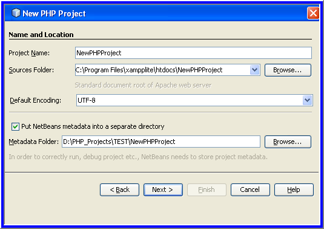
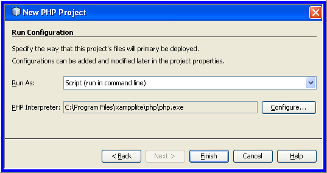

To change the settings of an existing project, position the cursor on
the project node and choose Properties from the popup menu. Proceed as
described in section Customizing the Project Setup.
Specifying the Project Name and Location of the Source Files
Start the IDE and switch to the Projects window.
Choose File > New Project.
The Choose Project panel opens.
A
copy of the source files must be kept in a subfolder of the document
root. However, you can have your Sources Folder in a different location
than the document root and copy source files from this location to the
document root. See Specifying the Run Configuration.
From the Default Encoding dropdown list, choose the default encoding for your project.
If
you want to store NetBeans metadata in a different location than your
source files, select "Put NetBeans metadata into a separate directory."
For example, you might want to store your sources in your document root
but the NetBeans metadata in your NetBeansProjects directory.

Click Next. The Run Configuration panel opens.
Importing Existing Source Files into a Project
In
the Projects area, choose PHP Application with Existing Sources and
click Next. The New PHP Project > Name and Location panel opens.
In the Project Name text field, enter the name of the project.
In the Sources Folder field, specify the folder from where you want to import the source files. Note: If you are going to run the project on a local web server, do not forget to specify copying the source files to it.
From the Default Encoding dropdown list, choose the default encoding for your project.
If
you want to store NetBeans metadata in a different location than your
source files, select "Put NetBeans metadata into a separate directory."
For example, you might want to store your sources in your document root
but the NetBeans metadata in your NetBeansProjects directory.
Click Next. The Run Configuration panel opens.
Specifying the Default Run Configuration of the New Project
PHP development features a large variety of use cases. The most commonly used cases are:
Developing PHP web pages on a local machine with a local web server.
Executing
PHP scripts using a local PHP engine. This approach is applied to PHP
files that are not intended for outputting HTML. Therefore such scripts
can be run without a browser.
Remote Development. The PHP
source code and other application files are uploaded to a remote web
server via FTP. This use case is common when the development is shared
across multiple people.
A combination of the above use
cases: an application is developed locally and deployed on a remote
production server upon completion. During development, PHP scripts are
executed if necessary.
Run configurations
accommodate the use cases previously described. A run configuration is
a stored setting for running a PHP project. You can define several
configurations for one project and switch between them back and forth.
For example, if an application has been developed locally and needs to
be uploaded to a remote production server, you only need to choose
another run configuration. Run configurations apply to both running and
debugging.
Note: During the project creation,
the default run configuration is defined. To define additional run
configurations, customize your project setup.
To set the default run configuration for your project, choose
the relevant option from the Run As dropdown list on the Run
Configuration panel. The following options are available:
Script. This run configuration does not require that a web server be installed and running. You only need a PHP engine.
Local Web Site
From the Run As dropdown list, choose Local Web Site. The further procedure depends on the type of your project.
Project without Previously Developed Sources
In
the Project URL field, check the automatically generated URL address.
Make sure that the Apache HTTP server listens to the default port 80.
If not, specify the port number explicitly:
localhost:<port number>
To
have a separate storage for the project's source files, select the Copy
files from Sources Folder to another location checkbox.
If in the Name and Location panel
you selected a location for the source folder that was not the document
root, select "Copy files from Sources Folder to another location" and
browse to the document root folder.
Click Finish.
Project with Previously Developed Sources
Select the Copy files from Sources Folder to another location checkbox.
In
the Copy to Folder field, specify the folder on your web server where
you want to store your source files. Use the Browse button, if
necessary.
The field by default specifies the following path: <Document Root>\<New PHP Project>.
The document root is the folder where the web server looks for files to
open in the browser. The document root is specified in the web server configuration file.
The wizard detects the Apache installation type, either a component or
within a package, and provides the path to the default location of the htdocs
folder for the current installation type. Therefore, if you accepted
the default settings during the installation of the Apache server or
the AMP package, choose the path from the dropdown list.
In the Project URL field, check the automatically generated URL
address. Make sure that the Apache HTTP server listens to the default
port 80. If not, specify the port number explicitly:
localhost:<port number>
Click Finish.
Remote Web Site
From Run As dropdown list, choose Remote Web Site (FTP).
From the FTP Connection dropdown list, choose the relevant connection profile. Note: You can have several hosting and FTP accounts to
deploy your application with a separate FTP connection profile for each
account.
To create, update, or remove an FTP Connection profile, click
Manage. The Manage Remote Connections dialog box opens with the fields
showing the current FTP connection profile settings. Edit the fields as
necessary.
To create a new FTP connection profile, click Add. The Create New Connection dialog box opens.
In the Connection Name field, enter the name of the new connection. In this example the connection name is x10hosting.
Click OK. The Manage Remote Connections dialog box displays with the
name of the new connection in the Connection Name display field.
From the Type dropdown list, choose FTP.
In the Host Name field, enter the FTP Server name as it is written in the FTP account creation confirmation message. In this example, the FTP server is ftp.phpuser.x10hosting.com.
In the Port field, specify 21.
In the User Name field, enter your FTP Username as it is written in the FTP account creation confirmation message. In this example, the FTP username is uploader@phpuser.x10hosting.com.
Fill in the Password field. In this example the password is qwerty1234.
In the Initial Directory field, enter the name of your account directory on the FTP server. In this example, no account directory is specified, enter a slash in the field.
Click OK. You return to the Run Configuration panel.
In
the Upload Directory field, enter the name of the subfolder in the
initial directory where the source files will be uploaded. The prompt
below the field shows the FTP host URL.
To specify when
the files will be uploaded, choose the relevant option from the Upload
Files dropdown list. The available options are: Manually, On Save and
On Run. Note that the On Save option immediately propagates every
change to the remote server. If the synchronization takes longer than 1
second, a progress bar is shown.
Click Finish.
Script
From the Run As dropdown list, choose Script.
To
specify the location of the PHP engine, click the Configure button next
to the PHP Interpreter field. The Options dialog box, tab PHP opens.
In the PHP 5 Interpreter field, specify the path to the php.exe file. Use the Browse button, if necessary.
To
specify how the script execution results will be shown, select the
relevant checkbox in the Open Result In area. The following options are
available:
Output Window. The results of executing a script will appear in the output window in the bottom of the NetBeans IDE window.
Web Browser. The default browser window will open with the results of executing a script in the form of an HTML file.
Editor. The results of executing a script will open as an HTML file in the IDE editor window.
Click OK. The Options dialog box closes and the system returns to the Run Configuration panel.

Customizing the Project Setup
During
the project creation, the basic project settings are defined: the
project type, location of the project source files, and the default run
configuration. To expand the project setup with new settings, customize
the project. Position the cursor on the project node and choose
Properties from the popup menu. The Project Properties panel opens with
a list of settings categories.
Sources
On the Sources panel:
The
Web Root field shows the root folder of your application site. By
default, the field shows the Sources folder. To change the web root,
click Browse and select another folder.
Select the Copy files from Sources Folder to another location, if necessary, and specify the path to the storage folder.
Change the encoding, if necessary
To complete the project customization, click OK.
Run Configuration
On the Run Configuration panel, modify the default run configuration and/or define new run configurations, if necessary.
To
define a new run configuration, click New next to the Configuration
dropdown list. The Create New Configuration dialog box opens.
In
the Configuration Name field, enter the name of the new run
configuration and click OK. You return to the Run Configuration panel.
Define the run configuration settings in the same way as you defined the default run configuration during the project creation and click OK. The new configuration is added to the Configuration dropdown list.
To remove a configuration, select it from the Configuration dropdown list and click Delete.
To complete the project customization, click OK.
PHP Include Path
On the Include Path panel, specify the location of the files that you
need to use in the project but do not need to locate together with the
source files.
To add a folder, click Add Folder. The Select Folder(s) dialog box opens.
Select the relevant folders and click Open. You return to the PHP Include Path panel. The new folder is added to the list.
To navigate through the list, use the buttons Move Up and Move Down.
To remove a folder from the list of included folder, select the folder and click Remove.
To complete the project customization, click OK.
Debug
On the Debug panel, choose the part of the application that you need to debug.
To debug the server side of the application implemented with the use of PHP, select the Debug Server side PHP checkbox.
To
debug the client side of the application implemented with the use of
JavaScript, select the Debug Client side JavaScript checkbox and choose
the browser to use.
To complete the project customization, click OK.
Formatting
On the Formatting panel, define the formatting style you want to apply to your source files in the editor.
To apply general IDE settings, choose the "Use global options" option.
To customize the global options, click Edit Global Options. The standard IDE Options dialog box opens.
From the Language dropdown list, select the language to which the settings should be applied.
From the Categories dropdown list, select the format items to which the setting will be applied.
To
replace tabs with spaces, select the Expand Tabs to Spaces checkbox and
specify the number of spaces per indent, the tab size, and the right
margin.
Click OK. You return to the Formatting panel.
To
define the formatting settings for the current project, choose the Use
project specific options option. The hidden area displays. Define the
formatting settings as during the global options' customization.
To send comments and suggestions, get support, and keep informed on the latest
developments on the NetBeans IDE PHP development features, join
the users@php.netbeans.org mailing list.